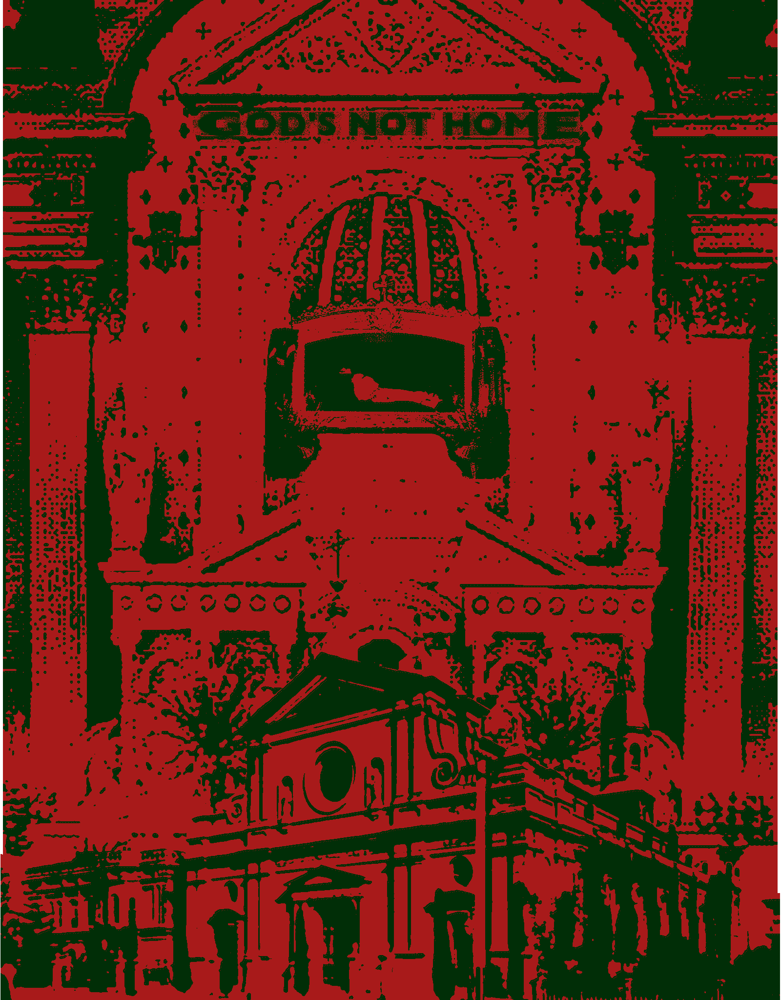

Digital research collage, 2025
Saint Vibiana, an early Christian martyr whose relics were discovered in the Roman catacombs in 1859, holds a unique place in the spiritual and cultural history of Los Angeles. Pope Pius IX's decision to send her relics to California marked a pivotal moment in the city's Catholic development. She was declared the principal patroness of Los Angeles, and her relics were placed in the newly constructed St. Vibiana’s Cathedral, dedicated in 1876. The cathedral, a significant architectural and religious landmark, not only embodied the faith of Catholic immigrants but also represented the evolving artistic and civic identity of Los Angeles. Over the course of its history, St. Vibiana’s Cathedral witnessed changes in religious practice, urban development, and ecclesiastical policy, ultimately leading to its closure and preservation as a historic landmark.
The relics of Saint Vibiana were discovered in a Roman catacomb, bearing an inscription that identified her as an "innocent and undefiled soul," a designation confirming her martyrdom. Recognizing her as a suitable patroness for the growing Catholic population of Los Angeles, Pope Pius IX presented her relics to Bishop Thaddeus Amat of Monterey, with the stipulation that a cathedral be built in her honor. Her arrival in Los Angeles symbolized divine favor and protection, and her relics became a central devotional object for the city's Catholic faithful (Weber 43–44).
Devotion to St. Vibiana was strongly encouraged by the Church. She was granted a public feast day on September 1, and a religious association in her name was established to foster piety and intercession. Miraculously, her relics survived a fire in 1865 that destroyed the pro-cathedral in Santa Barbara, further reinforcing the perception of her as a divine protector (Weber 45).
The cathedral, built at Main and Second Streets in downtown Los Angeles, reflected the artistic and architectural trends of its time. Designed in a Spanish Baroque Revival style, St. Vibiana’s featured a grand facade, high vaulted ceilings, and intricate stonework, reminiscent of European cathedrals. Its classical design elements, including the use of Indiana limestone and elaborate stained glass, represented the aspirations of the Catholic community in a rapidly expanding city (Weber 49–50).
As one of the first designated historical landmarks in Los Angeles, the cathedral stood as an enduring representation of Catholic identity in Southern California. Despite its grandeur, it was deemed insufficient for the growing archdiocese as early as 1904, when Pope Pius X approved the construction of a new cathedral. However, efforts to replace St. Vibiana’s were repeatedly delayed (Economist 1995).
The establishment of St. Vibiana’s Cathedral coincided with a period of significant Catholic immigration to the United States, particularly from Mexico, Ireland, and Italy. In Los Angeles, a city still forming its identity, the cathedral served as a crucial institution that provided not only religious guidance but also social support for immigrant communities. The Church offered education, charity, and a sense of belonging, helping Catholic immigrants assimilate while maintaining their religious traditions (Weber 52–53).
During the early 20th century, as Los Angeles grew into a major metropolitan center, Catholicism continued to expand its presence. The cathedral became a spiritual anchor for Catholics in a rapidly modernizing and diversifying city. However, anti-Catholic sentiment was also present, particularly from Protestant-dominated social and political spheres. The presence of an ornate Catholic cathedral in the heart of Los Angeles was both a sign of the Church’s growing influence and a target for those who viewed Catholicism as foreign or incompatible with American Protestant values (Weber 54).
By the mid-20th century, the demographic composition of Los Angeles had shifted significantly due to increased migration from Latin America. The cathedral remained a vital space for the city's Latino Catholic population, reinforcing its role as a sanctuary for faith amid broader socio-political changes, including civil rights movements and urban renewal projects. During this period, the Catholic Church in Los Angeles played a crucial role in advocating for social justice, workers' rights, and immigrant protections, mirroring the struggles and perseverance of its parishioners (Mannion 14).